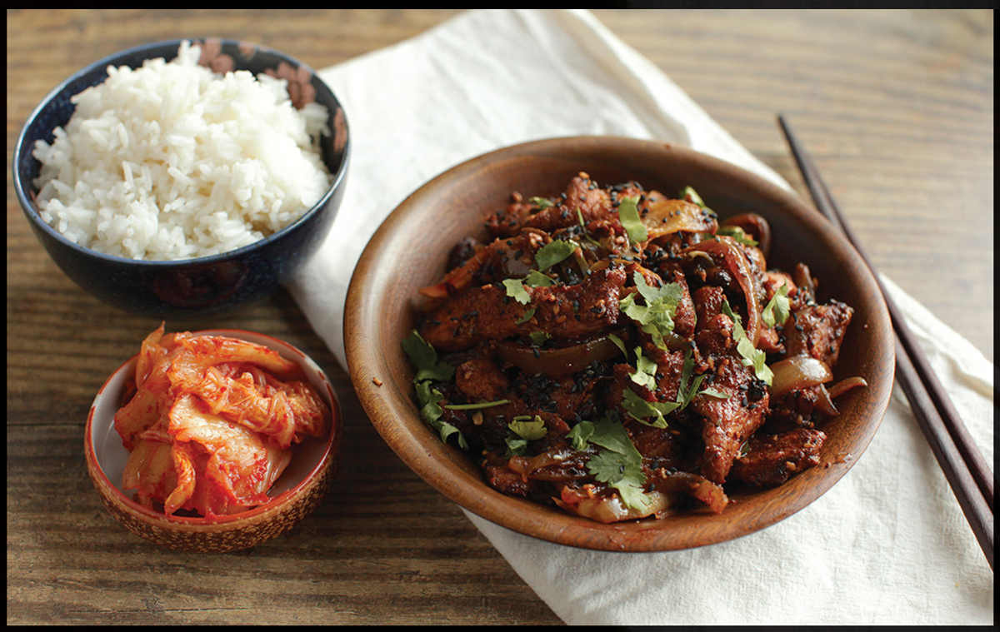

STIR-FRIED KIMCHI PORK
|
Yield Serves 4 |
Active Time 20 minutes Total Time 30 minutes |
You can use practically any Asian chile sauce, such as sambal oelek or sriracha in place of gochujang and end up with something tasty, or even omit it—the kimchi provides plenty of heat. In Korea, this stir-fry is typically made with thinly sliced fresh pork belly, which you can find at most Asian markets. It’s essential that it be quite thinly sliced, as pork belly is too tough to eat when sliced thick. Many well-stocked Western supermarkets will carry pork belly that the butcher counter can slice for you if you ask nicely. Sliced pork loin will work just fine if you can’t get the belly.
INGREDIENTS
For the Pork:
1 pound (450 g) thinly sliced pork belly, cut into 1- to 2-inch pieces (see Notes)
1 tablespoon (15 ml) gochujang (see Notes)
1 teaspoon (5 ml) light soy sauce or shoyu
1 teaspoon (5 ml) roasted sesame oil
1 teaspoon (4 g) sugar
¼ teaspoon (1 g) baking soda
½ teaspoon (1.5 g) cornstarch
For the Stir-Fry
8 ounces (225 g) kimchi with its juices
3 tablespoons (45 ml) peanut, rice bran, or other neutral oil
1 medium onion (about 6 ounces/180 g), cut into ¼-inch slices
1 jalapeño, serrano, or Chinese cowhorn chile, cut into ¼-inch slices on a bias
1 teaspoon toasted sesame seeds (optional)
Kosher salt and freshly ground black pepper
Clocking in at the opposite end of the subtlety spectrum from my Sliced Pork with Chives is Stir-Fried Kimchi Pork, a classic Korean dish known as jaeyook bokkeum. This is one of those magical recipes that rely on one uber-flavorful ingredient (kimchi!) to provide most of the flavor in the dish, requiring very few other aromatics. Traditional recipes for jaeyook bokkeum use pureed Asian pear or pear juice in the pork marinade. This provides not only sweetness but tenderizing enzymes as well. However, my goal when developing this recipe was to make it as simple as possible.
The marinade is nothing more than a little soy sauce blended with a dab of gochujang (a Korean fermented chile paste; see here). Rather than Asian pear, I just use a touch of sugar for sweetness, and I use the baking soda tenderization technique in place of those pear enzymes. Roasted sesame oil and black pepper—a classic Korean flavor pairing—also make an appearance.
Because this dish relies so much on the flavor provided by the kimchi, it’s important to use store-bought kimchi that actually tastes great right out of the jar or to make your own. The key step here is to drain the kimchi very well before you begin stir-frying. Wet kimchi will steam in the wok, causing your meat to overcook and your vegetables to turn mushy before any flavor development can occur. I put my kimchi in a fine-mesh strainer set over a bowl, then press on it and squeeze it as hard as I can with my bare hands. I then save that juice to add back to the stir-fry at the end.
DIRECTIONS
1For the Pork: Place the pork in a medium bowl, cover with cold water, and vigorously agitate it. Drain through a fine-mesh strainer set in the sink and press on the pork with your hands to remove excess water. Return the pork to the bowl and add the gochujang, soy sauce, sesame oil, sugar, baking soda, and cornstarch. Toss roughly with your fingertips or chopsticks until thoroughly combined. Set aside for 15 minutes at room temperature or refrigerate for up to 8 hours.
2Meanwhile, Drain the Kimchi: Place the kimchi in a wire-mesh strainer set over a bowl. Squeeze the kimchi firmly, pressing it against the strainer to remove as much liquid as you can. Reserve the drained kimchi and kimchi juice separately. You should have about ½ cup (120 ml) liquid. Less is OK. If you have too much, discard excess over ½ cup.

3BEFORE YOU STIR-FRY, GET YOUR BOWLS READY:
4For the Stir-Fry: Heat a wok over high heat until lightly smoking. Add 1 tablespoon (15 ml) of the oil and swirl to coat. Add half of the pork, spread into a single layer, and cook without moving until lightly browned, about 45 seconds. Cook, tossing and stirring frequently until barely cooked through, about 30 seconds longer. Transfer the cooked pork to a clean bowl or plate. Wipe out the wok and repeat with more oil and the remaining pork, adding the cooked pork to the first batch.
5Wipe out the wok and return to high heat until lightly smoking. Add the remaining 1 tablespoon (15 ml) oil and swirl to coat. Add the drained kimchi and sliced onions and cook, tossing and stirring frequently, until the onions are lightly softened and the vegetables begin to take on a little color, about 1 minute. Add the sliced chiles and cook, stirring, until fragrant, about 30 seconds.
6Return the pork to the wok and add the kimchi juice. Cook, tossing and stirring constantly, until the kimchi juice is reduced and the mixture is relatively dry but glossy. Stir in the sesame seeds, if using. Season to taste with lots of black pepper and a little salt (you may not need salt, depending on how salty your kimchi is). Transfer to a serving platter and serve immediately.
JOYCE CHEN: The Godmother of Chinese American Cuisine
Opened in 1958, the Joyce Chen Restaurant in Cambridge, Massachusetts, was one of the first northern Chinese restaurants in the country (the Chinese restaurant landscape up to then was mostly dominated by the Cantonese cuisine made popular by a number of Chinese chefs in New York City and San Francisco, a city that has been home to Cantonese restaurants since at least the 1850s). Cantabrigians at her restaurant at 617 Concord Avenue were among the first in the United States to taste now-ubiquitous dishes like Peking duck, moo shu pork, hot and sour soup, panfried dumplings (for which Joyce coined the term “Peking ravioli”), and wonton soup. My parents, who were living in Cambridge at the time, picked up a taste for this stuff and a copy of the Joyce Chen Cook Book that lived in our kitchen, becoming increasingly tattered and oil-stained with each delicious meal my parents cooked from it. I’m too young to have any memories of eating at any of Joyce Chen’s restaurants, but I know her food intimately.
I recently leafed through a copy of the book (now long out of print) and instantly recognized dishes we had at the family dinner table. The velveted chicken my dad made for my little sister (See Pico’s Not-So-Bland Chicken, here). The flank steak stir-fried with snow peas in a light soy-based sauce my mom made (my version appears on here). Beef shreds dry-fried until crisp and chewy, soaked in an MSG-packed sauce (here). And then there was the Chungking pork.
I did a double take as I stumbled onto that last one. My mom’s Chungking pork is a dish that has stuck in my memory as firmly as the dry, lean piece of pork she made it with used to stick in my throat. I dreaded those nights. I’d always figured that the use of lean pork loin in the dish was my mom’s own attempt at trying to keep us healthy, but there it was, right on here: “1 pound lean pork.” What was even more shocking to me was that this dish is actually meant to be Sichuan-style twice-cooked pork, a dish more commonly made with fatty pork belly or shoulder! (You can find my own hybrid version on here.)
This is one of the many charming anachronisms you’ll find in the book, which contains a foreword by famed Boston-area cardiologist Paul Dudley White. At the time, fat was the enemy, and in what was presumably an attempt to entice a Western audience to try a cuisine that already had a reputation for being mostly gluey stews, Joyce Chen decided to use health as a selling point. This is why we end up with dishes like twice-cooked pork belly made with lean pork loin, but flavored with MSG, a seasoning against which Western audiences had yet to develop prejudices (see here).
I’ve found that you can greatly improve every recipe in the book by simply omitting the word lean (the MSG can stay).
Some may claim that these types of changes and concessions to Western palates render the recipes inauthentic. This is true, and Joyce Chen says as much herself. Her recipes and restaurants were created for an audience that was interested in learning about Chinese food but had no frame of reference and very little access to specialty Chinese ingredients. One of her greatest talents was in walking that fine tightrope between authenticity and accessibility. That’s a talent I greatly admire as I frequently try to wobble my way along that line myself.
This was far from Joyce’s only contribution to the culinary world. Maybe you own a company that sells chafing dishes, or perhaps you’re the landlord of a suburban strip mall. Well, Joyce Chen invented the Chinese lunch buffets that are the bread and butter of your business. You know those flat-bottomed woks I wax poetic about? Joyce Chen is the original patent owner for the very first flat-bottomed wok. I still recommend hers for home cooks.
Do you like watching chefs cook on television? Joyce Chen was one of the pioneers of that medium as well. Her show Joyce Chen Cooks ran for two seasons, from 1966 to 1967. It was the first nationally syndicated cooking show to be hosted by a woman of color. Perhaps you’re one of those patrons of the 41,000 Chinese restaurants in the United States who has an awkward time pronouncing some of the Chinese words and prefer to order your dishes by number. Thank Joyce Chen once again for the innovation of the numbered menu.
You can also add the introduction of bottled stir-fry sauces and polyethylene cutting boards to her list of American contributions.
Many of the recipes in this chapter and others owe a huge debt to the love of Chinese American food instilled in me by my parents, both Joyce Chen disciples, from a young age. Fortunately for my generation, getting those formerly hard-to-find ingredients is as simple as a trip to Chinatown or the Internet.